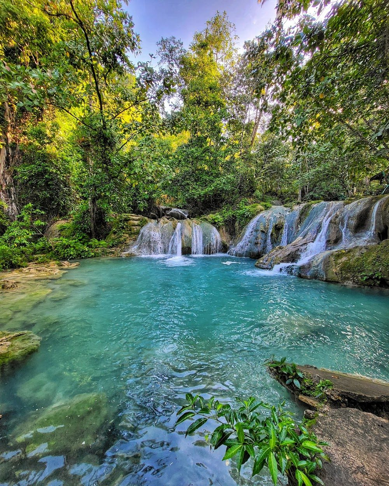
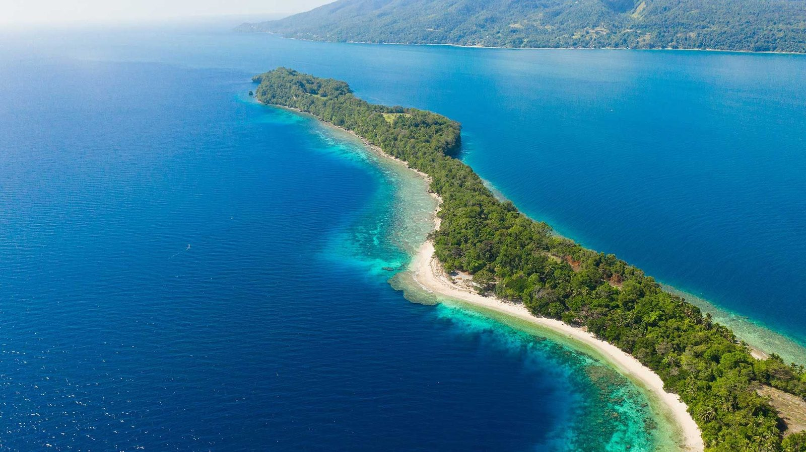

Gallery
A look at the places featured in this guide.






Photo credits
All photos belong to their respective owners. If you own a photo and want it credited or removed, please contact us.
| Photo | Credit |
|---|---|
| Island Garden City of Samal (aerial) | Photo from Discovery Samal. |
| Ligid Island dive spot, Samal | Photo from Discovery Samal. |
| Beachfront resort, Samal | Photo from Discovery Samal. |
| Monfort Bat Cave, Samal | Photo from WayPH: Fruit Bats Haven at Monfort Bat Cave. |
| Hagimit Falls, Samal | Photo from Wheree: Hagimit Falls. |
| Panabo City sign and City Hall | Photo by Sylvester Saldaña. |
| Palm-lined road, Tagum City | Photo by riley.ph. Source: riley.ph: Davao del Norte, Tagum City. |
| E-Park (Energy Park) photos, Tagum City (2 photos) | Photos from Tagum City Tourism: Energy Park. |
| Uraya’s Peak, Talaingod (3 photos) | Photos from KAJUANDER. |
| Mt. Megatong, Sto. Tomas | Photo from AllTrails: Mount Megatong. |